通用地面素材 · 第一批6张
32×32原生像素 · 通用材质与独立贴花。已登记场景素材库，可在地图编辑器选择。当前游戏地图未自动替换。过渡图为独立程序蒙版样稿。
实际生成提示词与原稿记录 · 地图编辑器 · 场景素材库 · 设计要求 · 质量检查
平整水泥 A
ground_concrete_plain_01不透明基础地面 · 点击大图查看原稿
压实泥土 A
ground_soil_compact_01不透明基础地面 · 点击大图查看原稿
平整水泥 B
ground_concrete_plain_02不透明基础地面 · 点击大图查看原稿
压实泥土 B
ground_soil_compact_02不透明基础地面 · 点击大图查看原稿
潮湿痕迹
decal_surface_damp_01透明状态贴花 · 点击大图查看原稿
细裂纹
decal_surface_crack_01透明状态贴花 · 点击大图查看原稿
平整水泥 · 8×8连铺
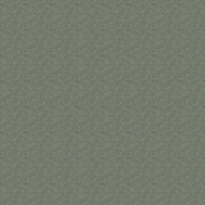
仅A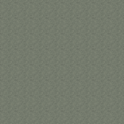
仅B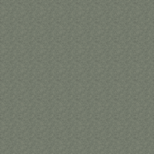
A/B棋盘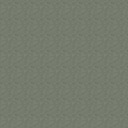
稳定混排压实泥土 · 8×8连铺
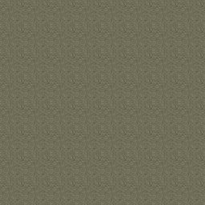
仅A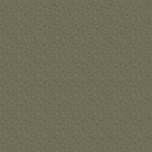
仅B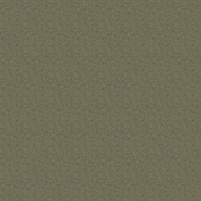
A/B棋盘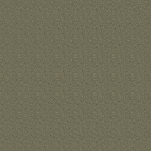
稳定混排现有铺装对照
 street_stone · 现有素材，未修改
street_stone · 现有素材，未修改 courtyard_paving · 现有素材，未修改
courtyard_paving · 现有素材，未修改材质连接样稿 · 不旋转有色原图
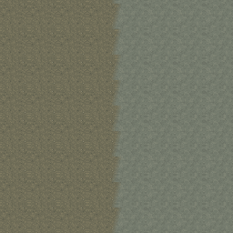
straight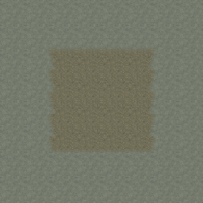
convex-corner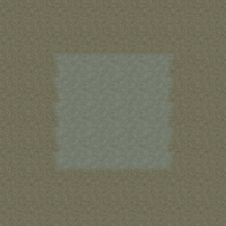
concave-corner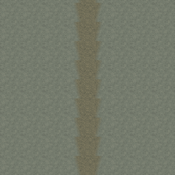
narrow-strip贴花兼容性 · 三种适用底材 × 三档显示强度
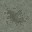
潮湿痕迹 · ground_concrete_plain_01
100%显示强度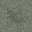
潮湿痕迹 · ground_concrete_plain_01
70%显示强度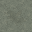
潮湿痕迹 · ground_concrete_plain_01
40%显示强度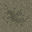
潮湿痕迹 · ground_soil_compact_01
100%显示强度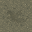
潮湿痕迹 · ground_soil_compact_01
70%显示强度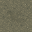
潮湿痕迹 · ground_soil_compact_01
40%显示强度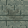
潮湿痕迹 · street_stone
100%显示强度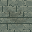
潮湿痕迹 · street_stone
70%显示强度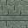
潮湿痕迹 · street_stone
40%显示强度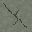
细裂纹 · ground_concrete_plain_01
100%显示强度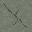
细裂纹 · ground_concrete_plain_01
70%显示强度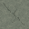
细裂纹 · ground_concrete_plain_01
40%显示强度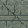
细裂纹 · street_stone
100%显示强度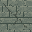
细裂纹 · street_stone
70%显示强度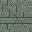
细裂纹 · street_stone
40%显示强度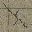
细裂纹 · courtyard_paving
100%显示强度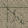
细裂纹 · courtyard_paving
70%显示强度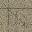
细裂纹 · courtyard_paving
40%显示强度开放空地 / 室内 / 窄巷 · 组合样稿
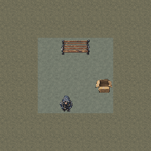
open · 人物与物件辨识度检查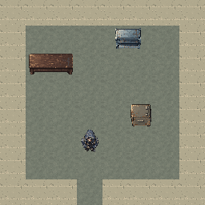
interior · 人物与物件辨识度检查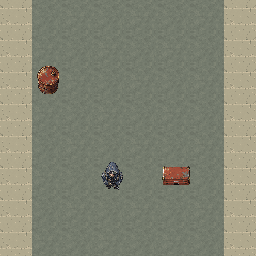
alley · 人物与物件辨识度检查